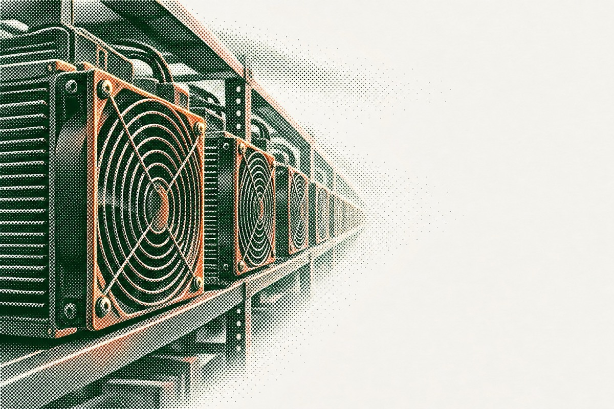
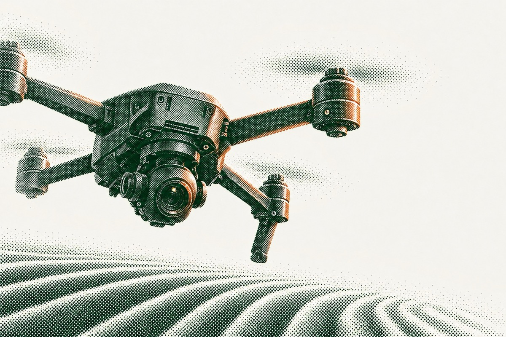

DataFour years of network data across equity, fund interests, private credit and digital assets.Since 2022
Privacy-preserving techCounterparties stay confidential until an introduction is agreed.Confidential by default
Network17,000+ qualified participants and 1,500+ companies.Both sides of each opportunity